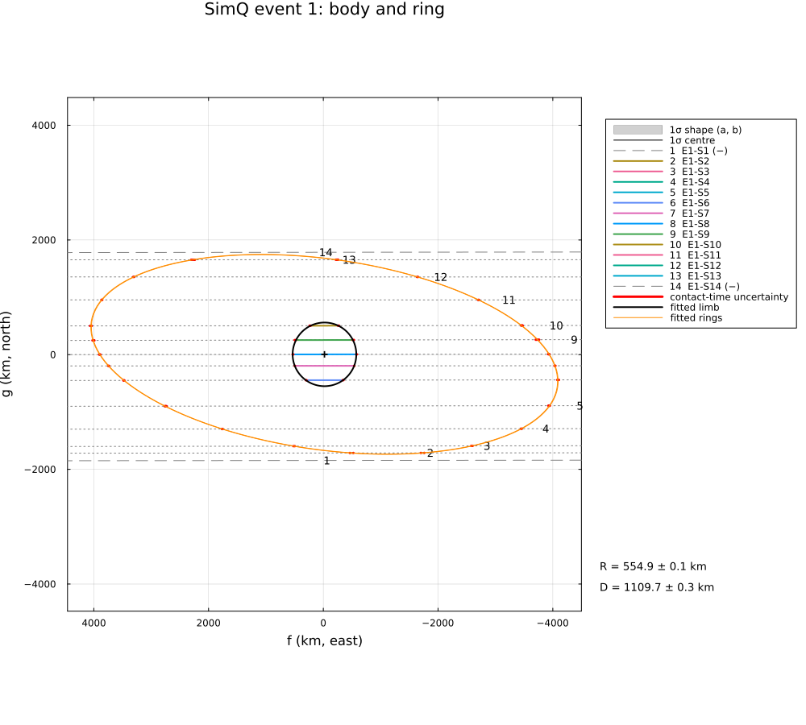

Synthetic: a distant ring seen in three events
Three simulated occultations, one year apart, by a large trans-Neptunian object with a ring far outside its Roche limit (Quaoar-like: a body of 555 km radius, a ring of 4100 km radius; Morgado et al. 2023), reduced with RingedLimb from the timings:
- per event, up to fourteen stations on land (an offset over the sea is left out), in the dark, spread along the track and across the ring (8200 km along the track, 3400 km across it), with their own timing accuracy; most chords see only the ring;
- each event alone: the ring ellipse (radius, opening angle, position angle); a single event leaves a twofold ambiguity of the ring pole;
- the three events together: one ring and one pole, a centre per event.
Run it with:
julia --project=. examples/sim_ring_pole.jl [output_dir] (default: examples/output/sim_ring_pole)The code is not run when the manual is built. The output after each section is that of the last run of examples/sim_ring_pole.jl, stored in examples/output/sim_ring_pole/output.txt.
using Occultations, Random, Printf, Statistics, LinearAlgebra
using Plots
include(joinpath(@__DIR__, "sim_stations.jl")) # stations on land, in the dark, with their equipment
out = length(ARGS) >= 1 ? ARGS[1] : mkpath(joinpath(@__DIR__, "output", "sim_ring_pole"))
rng = MersenneTwister(2023)1. the simulated events
eph = EphemKeplerian(a=43.7, e=0.04, i=8.0, Ω=189.0, ω=147.0, M=300.0, epoch=Epoch("2024-01-01"), name="SimQ")
body = Body("SimQ", eph; radius=555.0)The truth: a spherical body of 555 km radius and a ring of 4100 km radius, 10 km wide, with the pole at RA 260°, Dec +50°; the ephemeris offsets differ from event to event.
R, ringR, ringW, pole = 555.0, 4100.0, 10.0, (260.0, 50.0)
dates = ["2023-06-20T01:00:00", "2024-06-22T01:00:00", "2025-06-25T01:00:00"]
# cross-track offsets [km]: the ring (seen at B ≈ −24°) spans about ±1700 km across the track
offs_km = [-1850.0, -1720, -1600, -1300, -900, -450, -200, 0, 250, 500, 950, 1350, 1650, 1780]
evs = Event[]
for (k, d) in enumerate(dates)
t = Epoch(d)
ra, dec, _ = ephem_radec(body, t)
st = Star(ra + 0.003 / 3600 / cosd(dec), dec; name="star $k")
e = Event(st, body, t; name="event $k")
c = (40.0k - 60.0, 25.0 - 20.0k) # ephemeris offset [km]
u = EventContext(e).u
ring = project_ring(ringR, ringW, 0.1, pole..., u)
pv = positionv(st, eph, GEOCENTER, e.tref)
n̂ = (-pv.vg, pv.vf) ./ hypot(pv.vf, pv.vg)
sites = stations(st, body, e.tref, offs_km .+ (c[1] * n̂[1] + c[2] * n̂[2]); rng=rng, prefix="E$k-S", spread=120.0,
skip=true)
for s in sites
o, σ = s.observer, s.equipment[2]
cs = Contact[]
bod = predicted_contacts(e, o, EllipseOutline(R, R, 0.0); center=c, window=abs(s.τ) + 400, step=0.05)
for (a, b) in bod
push!(cs, Contact(:immersion, a + σ * randn(rng), σ), Contact(:emersion, b + σ * randn(rng), σ))
end
# a ring passage in front of (or behind) the body is not seen
for (a, b) in predicted_contacts(e, o, ring; center=c, window=abs(s.τ) + 600)
any(x -> a < x[2] && b > x[1], bod) && continue
# a dip shorter than the timing errors: its two contacts are still reported in order
ti, te = minmax(a + σ * randn(rng), b + σ * randn(rng))
push!(cs, Contact(:immersion, ti, σ; body=:ring1), Contact(:emersion, te, σ; body=:ring1))
end
sort!(cs; by=x -> x.time)
span = (e.tref + s.τ - 450, e.tref + s.τ + 450)
push!(e, isempty(cs) ? Chord(o.name, o; span=span) : Chord(o.name, o; contacts=cs, span=span))
end
@printf("%s %s: B = %+.2f°, P = %.2f°; %d chords cross the body, %d the ring\n", e.name, d[1:10], ring.opening,
ring.pa, count(ch -> any(x -> x.body === :auto, ch.contacts), e.chords),
count(ch -> any(x -> x.body === :ring1, ch.contacts), e.chords))
push!(evs, e)
endevent 1 2023-06-20: B = -23.93°, P = 352.10°; 5 chords cross the body, 12 the ring
event 2 2024-06-22: B = -23.79°, P = 351.19°; 5 chords cross the body, 12 the ring
event 3 2025-06-25: B = -23.63°, P = 350.29°; 5 chords cross the body, 12 the ring2. each event alone
The ring of one event is an ellipse: its radius, |B| and P are determined, but two ring planes give the same ellipse: the plane and its mirror image about the sky plane (opening angle +B or −B, the pole tilted towards or away from the observer). Both are found by starting from either. (A pole and its antipode describe the same plane: the fitted pole is the northern one.)
model = RingedLimb(CircleLimb(); rings=1)
single = map(enumerate(evs)) do (k, e)
u = EventContext(e).u
B0, P0 = ring_geometry(pole..., u)
sols = map((B0, -B0)) do Bs
α, δ = Occultations._ring_pole(Bs, P0, u) # the same ellipse, the plane mirrored
fit_limb(e; model=model, fix=[:ring1_tau], init=Dict(:ring_pole_ra => α, :ring_pole_dec => δ, :ring1_radius => 4000.0),
starts=2, rng=rng)
end
for r in sols
@printf(" event %d: pole (%7.3f ± %.3f°, %+7.3f ± %.3f°), χ² = %6.2f; ring radius %.1f ± %.1f km, B = %+.2f°, P = %.2f°\n",
k, r[:ring_pole_ra]..., r[:ring_pole_dec]..., r.chi2, r[:ring1_radius]..., r[:ring_opening][1], r[:ring_pa][1])
end
sols
end
println("(truth: pole (260°, +50°), ring radius 4100 km)") event 1: pole (259.997 ± 0.003°, +49.998 ± 0.003°), χ² = 35.07; ring radius 4100.0 ± 0.4 km, B = -23.93°, P = 352.10°
event 1: pole (130.836 ± 0.008°, +78.619 ± 0.004°), χ² = 35.07; ring radius 4100.0 ± 0.4 km, B = +23.93°, P = 352.10°
event 2: pole (260.007 ± 0.003°, +49.999 ± 0.002°), χ² = 51.05; ring radius 4099.8 ± 0.3 km, B = -23.79°, P = 351.20°
event 2: pole (135.450 ± 0.009°, +78.120 ± 0.002°), χ² = 51.05; ring radius 4099.8 ± 0.3 km, B = +23.79°, P = 351.20°
event 3: pole (260.002 ± 0.003°, +50.001 ± 0.003°), χ² = 49.27; ring radius 4100.1 ± 0.2 km, B = -23.63°, P = 350.29°
event 3: pole (139.829 ± 0.009°, +77.583 ± 0.003°), χ² = 49.27; ring radius 4100.1 ± 0.2 km, B = +23.63°, P = 350.29°
(truth: pole (260°, +50°), ring radius 4100 km)3. the three events together
One body radius, one ring and one pole; a centre for every event. The line of sight changes by about a degree from year to year (the parallax of the Earth's orbit at 44 au, and the motion of the body), so the mirror solutions of the single events no longer coincide: the two poles are compared by χ².
sols = map(single[1]) do s
init = Dict(:ring_pole_ra => s[:ring_pole_ra][1], :ring_pole_dec => s[:ring_pole_dec][1],
:ring1_radius => s[:ring1_radius][1])
fit_limb(evs; model=model, fix=[:ring1_tau], init=init, starts=2, rng=rng)
end
for r in sols
@printf(" pole (%7.3f ± %.3f°, %+7.3f ± %.3f°): χ² = %.2f for %d degrees of freedom\n", r[:ring_pole_ra]...,
r[:ring_pole_dec]..., r.chi2, r.dof)
end
rJ = sols[argmin([r.chi2 for r in sols])]
display(rJ)
for (n, tv) in ((:radius, R), (:ring1_radius, ringR), (:ring1_width, ringW), (:ring_pole_ra, pole[1]), (:ring_pole_dec, pole[2]))
@printf(" %-14s %9.3f ± %6.3f (truth %8.3f)\n", n, rJ[n]..., tv)
end
@printf("Δχ² = %.1f between the two poles: %s\n", abs(sols[1].chi2 - sols[2].chi2),
abs(sols[1].chi2 - sols[2].chi2) > 9 ? "the three events decide (> 3σ)" :
"the three events do not decide between them (the line of sight hardly changes)") pole (260.002 ± 0.002°, +50.000 ± 0.001°): χ² = 144.40 for 163 degrees of freedom
pole (134.585 ± 0.005°, +77.900 ± 0.001°): χ² = 695818.66 for 163 degrees of freedom
LimbProblem fit: χ² = 144.400, dof = 163, χ²/dof = 0.886
center_f_1 = -20.066530 ± 0.182949
center_g_1 = 5.049292 ± 0.051777
center_f_2 = 20.080328 ± 0.170469
center_g_2 = -14.976026 ± 0.052405
center_f_3 = 59.898778 ± 0.157812
center_g_3 = -34.930471 ± 0.053602
radius = 554.851674 ± 0.148558
ring_pole_ra = 260.001865 ± 0.001674
ring_pole_dec = 49.999784 ± 0.001343
ring1_radius = 4100.070566 ± 0.150137
ring1_width = 9.944942 ± 0.043015
ring1_tau = 0.300000 (fixed)
derived:
offset_ra_1 = -0.660427 ± 0.006021
offset_dec_1 = 0.166182 ± 0.001704
offset_ra_2 = 0.661442 ± 0.005615
offset_dec_2 = -0.493307 ± 0.001726
offset_ra_3 = 1.974688 ± 0.005203
offset_dec_3 = -1.151556 ± 0.001767
ring1_equivalent_depth = 2.983483 ± 0.012905
ring_opening_1 = -23.932378 ± 0.001278
ring_pa_1 = 352.100129 ± 0.001261
ring1_opacity_1 = 0.522666 ± 0.000018
ring1_equivalent_width_1 = 5.197883 ± 0.022480
ring_opening_2 = -23.788162 ± 0.001270
ring_pa_2 = 351.194191 ± 0.001270
ring1_opacity_2 = 0.524676 ± 0.000018
ring1_equivalent_width_2 = 5.217876 ± 0.022566
ring_opening_3 = -23.631158 ± 0.001261
ring_pa_3 = 350.292593 ± 0.001279
ring1_opacity_3 = 0.526884 ± 0.000018
ring1_equivalent_width_3 = 5.239831 ± 0.022661
radius 554.852 ± 0.149 (truth 555.000)
ring1_radius 4100.071 ± 0.150 (truth 4100.000)
ring1_width 9.945 ± 0.043 (truth 10.000)
ring_pole_ra 260.002 ± 0.002 (truth 260.000)
ring_pole_dec 50.000 ± 0.001 (truth 50.000)
Δχ² = 695674.3 between the two poles: the three events decide (> 3σ)Figures
for k in 1:3
savefig(plot(rJ; event=k, title="SimQ event $k: body and ring", size=(1000, 900)), joinpath(out, "ring_pole_event$k.png"))
end
println("figures written to ", out)The joint fit in the first event: the body and the ring with the chords:
